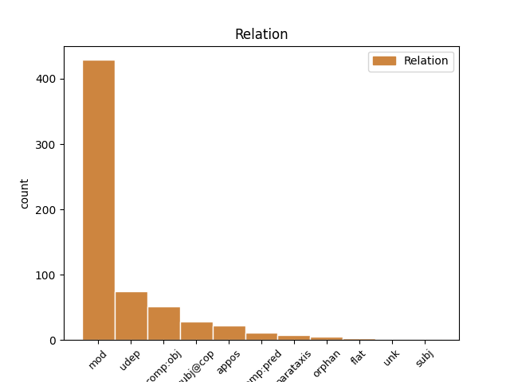
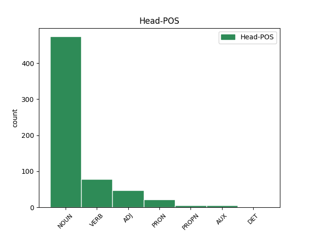
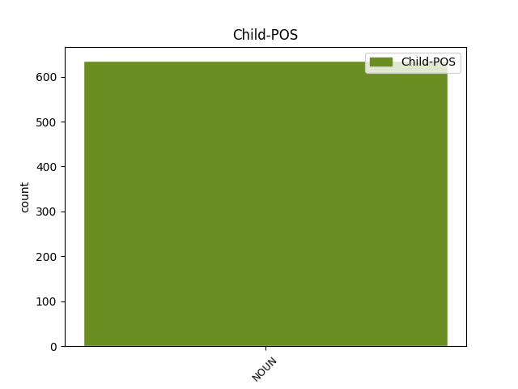

Distribution of features within this leaf



Agreement Rules sorted by frequency.
- When the dependent token is the modifer(mod) of the head token, and the head token is NOUN and the dependent token is NOUN.
1 Arvesta _ _ _ _ 0 _ _ _
2 , _ _ _ _ 0 _ _ _
3 et _ _ _ _ 0 _ _ _
4 keskmine _ _ _ _ 0 _ _ _
5 selliste _ _ _ _ 0 _ _ _
6 toodete toode NOUN S Case=Gen|Number=Plur 7 mod _ _
7 koosteliini kooste_liin NOUN S Case=Gen|Number=Sing 0 _ _ _
8 kvaliteeditase _ _ _ _ 0 _ _ _
9 on _ _ _ _ 0 _ _ _
10 98 _ _ _ _ 0 _ _ _
11 % _ _ _ _ 0 _ _ _
12 mis _ _ _ _ 0 _ _ _
13 tähendab _ _ _ _ 0 _ _ _
14 et _ _ _ _ 0 _ _ _
15 igast _ _ _ _ 0 _ _ _
16 100st _ _ _ _ 0 _ _ _
17 2 _ _ _ _ 0 _ _ _
18 lähevad _ _ _ _ 0 _ _ _
19 liiini _ _ _ _ 0 _ _ _
20 tagumisest _ _ _ _ 0 _ _ _
21 otsast _ _ _ _ 0 _ _ _
22 kõrvale _ _ _ _ 0 _ _ _
23 ... _ _ _ _ 0 _ _ _
24 ja _ _ _ _ 0 _ _ _
25 kui _ _ _ _ 0 _ _ _
26 sa _ _ _ _ 0 _ _ _
27 arvad _ _ _ _ 0 _ _ _
28 et _ _ _ _ 0 _ _ _
29 need _ _ _ _ 0 _ _ _
30 ka _ _ _ _ 0 _ _ _
31 kõrvale _ _ _ _ 0 _ _ _
32 jäävad _ _ _ _ 0 _ _ _
33 siis _ _ _ _ 0 _ _ _
34 eksid _ _ _ _ 0 _ _ _
35 . _ _ _ _ 0 _ _ _
1 Telklaager telk_laager NOUN S Case=Nom|Number=Sing 0 _ _ _
2 Rock rock NOUN S Case=Nom|Number=Sing 1 appos _ _
3 Ramp _ _ _ _ 0 _ _ _
4 2012 _ _ _ _ 0 _ _ _
5 on _ _ _ _ 0 _ _ _
6 korrtaldatud _ _ _ _ 0 _ _ _
7 telklaager _ _ _ _ 0 _ _ _
8 . _ _ _ _ 0 _ _ _
1 ma _ _ _ _ 0 _ _ _
2 spets _ _ _ _ 0 _ _ _
3 lõpetasin _ _ _ _ 0 _ _ _
4 ülejäänud _ _ _ _ 0 _ _ _
5 jutu _ _ _ _ 0 _ _ _
6 sirvimise _ _ _ _ 0 _ _ _
7 ja _ _ _ _ 0 _ _ _
8 seost _ _ _ _ 0 _ _ _
9 ikka _ _ _ _ 0 _ _ _
10 ei _ _ _ _ 0 _ _ _
11 leidnud _ _ _ _ 0 _ _ _
12 - _ _ _ _ 0 _ _ _
13 üks _ _ _ _ 0 _ _ _
14 ütleb _ _ _ _ 0 _ _ _
15 et _ _ _ _ 0 _ _ _
16 levi levi NOUN S Case=Nom|Number=Sing 17 subj@cop _ _
17 kehv kehv ADJ A Case=Nom|Degree=Pos|Number=Sing 0 _ _ _
18 ja _ _ _ _ 0 _ _ _
19 siis _ _ _ _ 0 _ _ _
20 vastuseks _ _ _ _ 0 _ _ _
21 " _ _ _ _ 0 _ _ _
22 selliset _ _ _ _ 0 _ _ _
23 ja _ _ _ _ 0 _ _ _
24 muude _ _ _ _ 0 _ _ _
25 jamade _ _ _ _ 0 _ _ _
26 pärast _ _ _ _ 0 _ _ _
27 . _ _ _ _ 0 _ _ _
28 . _ _ _ _ 0 _ _ _
29 . _ _ _ _ 0 _ _ _
30 . _ _ _ _ 0 _ _ _
31 " _ _ _ _ 0 _ _ _
1 Kohe _ _ _ _ 0 _ _ _
2 tuleb _ _ _ _ 0 _ _ _
3 päikese _ _ _ _ 0 _ _ _
4 torm _ _ _ _ 0 _ _ _
5 ja _ _ _ _ 0 _ _ _
6 siis _ _ _ _ 0 _ _ _
7 hakkame _ _ _ _ 0 _ _ _
8 soomlastega _ _ _ _ 0 _ _ _
9 võistlema _ _ _ _ 0 _ _ _
10 telefoni _ _ _ _ 0 _ _ _
11 heitmises _ _ _ _ 0 _ _ _
12 ( _ _ _ _ 0 _ _ _
13 teatavasti _ _ _ _ 0 _ _ _
14 selline _ _ _ _ 0 _ _ _
15 ala _ _ _ _ 0 _ _ _
16 soomes _ _ _ _ 0 _ _ _
17 spordis sport NOUN S Case=Ine|Number=Sing 18 udep _ _
18 olemas olema VERB V Case=Ine|VerbForm=Sup|Voice=Act 0 _ _ _
19 :D _ _ _ _ 0 _ _ _
20 ) _ _ _ _ 0 _ _ _
1 Ta _ _ _ _ 0 _ _ _
2 vajab _ _ _ _ 0 _ _ _
3 selleks _ _ _ _ 0 _ _ _
4 , _ _ _ _ 0 _ _ _
5 et _ _ _ _ 0 _ _ _
6 siin _ _ _ _ 0 _ _ _
7 viia _ _ _ _ 0 _ _ _
8 täide _ _ _ _ 0 _ _ _
9 oma _ _ _ _ 0 _ _ _
10 plaani _ _ _ _ 0 _ _ _
11 meie mina PRON P Case=Gen|Number=Plur|Person=1|PronType=Prs 0 _ _ _
12 ( _ _ _ _ 0 _ _ _
13 kristlaste kristlane NOUN S Case=Gen|Number=Plur 11 appos _ SpaceAfter=No
14 ) _ _ _ _ 0 _ _ _
15 eestpalveid _ _ _ _ 0 _ _ _
16 , _ _ _ _ 0 _ _ _
17 palveid _ _ _ _ 0 _ _ _
18 , _ _ _ _ 0 _ _ _
19 küllakutseid _ _ _ _ 0 _ _ _
20 ! _ _ _ _ 0 _ _ _
1 Tekkis _ _ _ _ 0 _ _ _
2 küsimus _ _ _ _ 0 _ _ _
3 , _ _ _ _ 0 _ _ _
4 et _ _ _ _ 0 _ _ _
5 kas _ _ _ _ 0 _ _ _
6 see _ _ _ _ 0 _ _ _
7 aasta _ _ _ _ 0 _ _ _
8 on _ _ _ _ 0 _ _ _
9 ka _ _ _ _ 0 _ _ _
10 sedasi _ _ _ _ 0 _ _ _
11 , _ _ _ _ 0 _ _ _
12 et _ _ _ _ 0 _ _ _
13 sitamaja _ _ _ _ 0 _ _ _
14 ja _ _ _ _ 0 _ _ _
15 söökla _ _ _ _ 0 _ _ _
16 asuvad _ _ _ _ 0 _ _ _
17 körvuti _ _ _ _ 0 _ _ _
18 ? _ _ _ _ 0 _ _ _
19 , _ _ _ _ 0 _ _ _
20 st _ _ _ _ 0 _ _ _
21 et _ _ _ _ 0 _ _ _
22 kui _ _ _ _ 0 _ _ _
23 öhtul _ _ _ _ 0 _ _ _
24 midagi miski PRON P Case=Par|Number=Sing|PronType=Ind 0 _ _ _
25 närimist närimine NOUN S Case=Par|Number=Sing 24 mod _ _
26 vötta _ _ _ _ 0 _ _ _
27 seal _ _ _ _ 0 _ _ _
28 toiduputkade _ _ _ _ 0 _ _ _
29 juures _ _ _ _ 0 _ _ _
30 ning _ _ _ _ 0 _ _ _
31 keegi _ _ _ _ 0 _ _ _
32 juhtub _ _ _ _ 0 _ _ _
33 peldiku _ _ _ _ 0 _ _ _
34 ust _ _ _ _ 0 _ _ _
35 avama _ _ _ _ 0 _ _ _
36 siis _ _ _ _ 0 _ _ _
37 hullem _ _ _ _ 0 _ _ _
38 lebra _ _ _ _ 0 _ _ _
39 üleval _ _ _ _ 0 _ _ _
40 ? _ _ _ _ 0 _ _ _
1 Vahest _ _ _ _ 0 _ _ _
2 mõtlen _ _ _ _ 0 _ _ _
3 isegi _ _ _ _ 0 _ _ _
4 , _ _ _ _ 0 _ _ _
5 kuidas _ _ _ _ 0 _ _ _
6 see _ _ _ _ 0 _ _ _
7 ometi _ _ _ _ 0 _ _ _
8 juhtuda _ _ _ _ 0 _ _ _
9 sai _ _ _ _ 0 _ _ _
10 --- _ _ _ _ 0 _ _ _
11 mina _ _ _ _ 0 _ _ _
12 ja _ _ _ _ 0 _ _ _
13 paanikahood _ _ _ _ 0 _ _ _
14 , _ _ _ _ 0 _ _ _
15 olin _ _ _ _ 0 _ _ _
16 nii _ _ _ _ 0 _ _ _
17 enesekindel _ _ _ _ 0 _ _ _
18 ja _ _ _ _ 0 _ _ _
19 julge _ _ _ _ 0 _ _ _
20 ja _ _ _ _ 0 _ _ _
21 siis _ _ _ _ 0 _ _ _
22 ...... _ _ _ _ 0 _ _ _
23 tundusid _ _ _ _ 0 _ _ _
24 ka _ _ _ _ 0 _ _ _
25 lihtsad _ _ _ _ 0 _ _ _
26 asjad _ _ _ _ 0 _ _ _
27 ületamatud ületamatu ADJ A Case=Nom|Degree=Pos|Number=Plur 0 _ _ _
28 ..... _ _ _ _ 0 _ _ _
29 ( _ _ _ _ 0 _ _ _
30 sõit sõit NOUN S Case=Nom|Number=Sing 27 parataxis _ _
31 pimedas _ _ _ _ 0 _ _ _
32 , _ _ _ _ 0 _ _ _
33 lennukisõit _ _ _ _ 0 _ _ _
34 ) _ _ _ _ 0 _ _ _
35 . _ _ _ _ 0 _ _ _
1 Natuke _ _ _ _ 0 _ _ _
2 hiljem _ _ _ _ 0 _ _ _
3 , _ _ _ _ 0 _ _ _
4 kui _ _ _ _ 0 _ _ _
5 arvutis _ _ _ _ 0 _ _ _
6 juba _ _ _ _ 0 _ _ _
7 rahulikumaks _ _ _ _ 0 _ _ _
8 oli _ _ _ _ 0 _ _ _
9 läinud _ _ _ _ 0 _ _ _
10 , _ _ _ _ 0 _ _ _
11 tuli _ _ _ _ 0 _ _ _
12 Kazaa Kazaa PROPN S Case=Nom|Number=Sing 0 _ _ _
13 , _ _ _ _ 0 _ _ _
14 teada-tuntud _ _ _ _ 0 _ _ _
15 puhtusehull puhtuse_hull NOUN S Case=Nom|Number=Sing 12 appos _ _
16 ja _ _ _ _ 0 _ _ _
17 yritas _ _ _ _ 0 _ _ _
18 seda _ _ _ _ 0 _ _ _
19 sigadust _ _ _ _ 0 _ _ _
20 natuke _ _ _ _ 0 _ _ _
21 koristada _ _ _ _ 0 _ _ _
22 , _ _ _ _ 0 _ _ _
23 aga _ _ _ _ 0 _ _ _
24 peagi _ _ _ _ 0 _ _ _
25 lõi _ _ _ _ 0 _ _ _
26 ka _ _ _ _ 0 _ _ _
27 tema _ _ _ _ 0 _ _ _
28 käega _ _ _ _ 0 _ _ _
29 ja _ _ _ _ 0 _ _ _
30 ronis _ _ _ _ 0 _ _ _
31 oma _ _ _ _ 0 _ _ _
32 urgu _ _ _ _ 0 _ _ _
33 tagasi _ _ _ _ 0 _ _ _
34 - _ _ _ _ 0 _ _ _
35 pole _ _ _ _ 0 _ _ _
36 nende _ _ _ _ 0 _ _ _
37 mp3-dega _ _ _ _ 0 _ _ _
38 vaja _ _ _ _ 0 _ _ _
39 jamada _ _ _ _ 0 _ _ _
40 midagi _ _ _ _ 0 _ _ _
41 . _ _ _ _ 0 _ _ _
1 " _ _ _ _ 0 _ _ _
2 Ajaxi _ _ _ _ 0 _ _ _
3 laul _ _ _ _ 0 _ _ _
4 - _ _ _ _ 0 _ _ _
5 carmen _ _ _ _ 0 _ _ _
6 , _ _ _ _ 0 _ _ _
7 ajaxi _ _ _ _ 0 _ _ _
8 laul laul NOUN S Case=Nom|Number=Sing 10 subj@cop _ _
9 - _ _ _ _ 0 _ _ _
10 carmen Carmen PROPN S Case=Nom|Number=Sing 0 _ _ _
11 , _ _ _ _ 0 _ _ _
12 " _ _ _ _ 0 _ _ _
13 korrutas _ _ _ _ 0 _ _ _
14 ta _ _ _ _ 0 _ _ _
15 endamisi _ _ _ _ 0 _ _ _
16 " _ _ _ _ 0 _ _ _
17 Sepapoisid _ _ _ _ 0 _ _ _
18 - _ _ _ _ 0 _ _ _
19 oota _ _ _ _ 0 _ _ _
20 , _ _ _ _ 0 _ _ _
21 mis _ _ _ _ 0 _ _ _
22 kurat _ _ _ _ 0 _ _ _
23 see _ _ _ _ 0 _ _ _
24 sepapoisid _ _ _ _ 0 _ _ _
25 nyyd _ _ _ _ 0 _ _ _
26 oligi _ _ _ _ 0 _ _ _
27 .. _ _ _ _ 0 _ _ _
28 , _ _ _ _ 0 _ _ _
29 " _ _ _ _ 0 _ _ _
30 kui _ _ _ _ 0 _ _ _
31 järsku _ _ _ _ 0 _ _ _
32 juhtus _ _ _ _ 0 _ _ _
33 midagi _ _ _ _ 0 _ _ _
34 imelikku _ _ _ _ 0 _ _ _
35 . _ _ _ _ 0 _ _ _
1 Ei _ _ _ _ 0 _ _ _
2 ole _ _ _ _ 0 _ _ _
3 mures _ _ _ _ 0 _ _ _
4 , _ _ _ _ 0 _ _ _
5 lihtsalt _ _ _ _ 0 _ _ _
6 üllatav _ _ _ _ 0 _ _ _
7 tähele _ _ _ _ 0 _ _ _
8 panek panek NOUN S Case=Nom|Number=Sing 0 _ _ _
9 - _ _ _ _ 0 _ _ _
10 selline _ _ _ _ 0 _ _ _
11 püss püss NOUN S Case=Nom|Number=Sing 8 parataxis _ SpaceAfter=No
12 , _ _ _ _ 0 _ _ _
13 selline _ _ _ _ 0 _ _ _
14 piibel _ _ _ _ 0 _ _ _
15 ja _ _ _ _ 0 _ _ _
16 astus _ _ _ _ 0 _ _ _
17 ämbrisse _ _ _ _ 0 _ _ _
18 kuna _ _ _ _ 0 _ _ _
19 üks _ _ _ _ 0 _ _ _
20 kruvi _ _ _ _ 0 _ _ _
21 jäi _ _ _ _ 0 _ _ _
22 panematta _ _ _ _ 0 _ _ _
23 ja _ _ _ _ 0 _ _ _
24 nüüd _ _ _ _ 0 _ _ _
25 kõriseb _ _ _ _ 0 _ _ _
26 . _ _ _ _ 0 _ _ _
1 Teine _ _ _ _ 0 _ _ _
2 suurem _ _ _ _ 0 _ _ _
3 probleem probleem NOUN S Case=Nom|Number=Sing 23 subj@cop _ _
4 , _ _ _ _ 0 _ _ _
5 mida _ _ _ _ 0 _ _ _
6 võiks _ _ _ _ 0 _ _ _
7 mainida _ _ _ _ 0 _ _ _
8 , _ _ _ _ 0 _ _ _
9 on _ _ _ _ 0 _ _ _
10 liigne _ _ _ _ 0 _ _ _
11 kergekäelisus _ _ _ _ 0 _ _ _
12 kõiksugu _ _ _ _ 0 _ _ _
13 abivahendite _ _ _ _ 0 _ _ _
14 ( _ _ _ _ 0 _ _ _
15 libisev _ _ _ _ 0 _ _ _
16 , _ _ _ _ 0 _ _ _
17 kannused _ _ _ _ 0 _ _ _
18 , _ _ _ _ 0 _ _ _
19 külgratsmed _ _ _ _ 0 _ _ _
20 jne _ _ _ _ 0 _ _ _
21 ) _ _ _ _ 0 _ _ _
22 oskamatu _ _ _ _ 0 _ _ _
23 kasutamine kasutamine NOUN S Case=Nom|Number=Sing 0 _ _ _
24 , _ _ _ _ 0 _ _ _
25 mis _ _ _ _ 0 _ _ _
26 pigem _ _ _ _ 0 _ _ _
27 pööravad _ _ _ _ 0 _ _ _
28 kogu _ _ _ _ 0 _ _ _
29 ratsastuse _ _ _ _ 0 _ _ _
30 ja _ _ _ _ 0 _ _ _
31 ka _ _ _ _ 0 _ _ _
32 ratsutamise _ _ _ _ 0 _ _ _
33 vussi _ _ _ _ 0 _ _ _
34 . _ _ _ _ 0 _ _ _
1 Maksame _ _ _ _ 0 _ _ _
2 prügi _ _ _ _ 0 _ _ _
3 eest _ _ _ _ 0 _ _ _
4 mitu _ _ _ _ 0 _ _ _
5 korda _ _ _ _ 0 _ _ _
6 , _ _ _ _ 0 _ _ _
7 ka _ _ _ _ 0 _ _ _
8 kaäibemaksu käibe_maks NOUN S Case=Par|Number=Sing 0 _ _ _
9 mitu _ _ _ _ 0 _ _ _
10 korda kord NOUN S Case=Par|Number=Sing 8 orphan _ SpaceAfter=No
11 . _ _ _ _ 0 _ _ _
1 Meeldivaks _ _ _ _ 0 _ _ _
2 üllatuseks _ _ _ _ 0 _ _ _
3 oli _ _ _ _ 0 _ _ _
4 , _ _ _ _ 0 _ _ _
5 et _ _ _ _ 0 _ _ _
6 huvilisi _ _ _ _ 0 _ _ _
7 on _ _ _ _ 0 _ _ _
8 väga _ _ _ _ 0 _ _ _
9 palju _ _ _ _ 0 _ _ _
10 ning _ _ _ _ 0 _ _ _
11 sel _ _ _ _ 0 _ _ _
12 aastal _ _ _ _ 0 _ _ _
13 hüppab _ _ _ _ 0 _ _ _
14 esmakordselt _ _ _ _ 0 _ _ _
15 lennukist _ _ _ _ 0 _ _ _
16 välja _ _ _ _ 0 _ _ _
17 lausa _ _ _ _ 0 _ _ _
18 kolm _ _ _ _ 0 _ _ _
19 kursusetäit kursuse_täis NOUN S Case=Par|Number=Sing 20 mod _ _
20 hulljulgeid hull_julge ADJ A Case=Par|Degree=Pos|Number=Plur 0 _ _ _
21 . _ _ _ _ 0 _ _ _
1 Eilseks eilne ADJ A Case=Tra|Degree=Pos|Number=Sing 0 _ _ _
2 , _ _ _ _ 0 _ _ _
3 6. _ _ _ _ 0 _ _ _
4 detsembriks detsember NOUN S Case=Tra|Number=Sing 1 appos _ _
5 kutsus _ _ _ _ 0 _ _ _
6 Eesti _ _ _ _ 0 _ _ _
7 Lennuakadeemia _ _ _ _ 0 _ _ _
8 Üliõpilasesindus _ _ _ _ 0 _ _ _
9 koolile _ _ _ _ 0 _ _ _
10 külla _ _ _ _ 0 _ _ _
11 Tartu _ _ _ _ 0 _ _ _
12 Verekeskuse _ _ _ _ 0 _ _ _
13 , _ _ _ _ 0 _ _ _
14 et _ _ _ _ 0 _ _ _
15 kool _ _ _ _ 0 _ _ _
16 saaks _ _ _ _ 0 _ _ _
17 anda _ _ _ _ 0 _ _ _
18 oma _ _ _ _ 0 _ _ _
19 panuse _ _ _ _ 0 _ _ _
20 vereloovutamisel _ _ _ _ 0 _ _ _
21 . _ _ _ _ 0 _ _ _
1 Selge selge ADJ A Case=Nom|Degree=Pos|Number=Sing 0 _ _ _
2 , _ _ _ _ 0 _ _ _
3 tänud tänu NOUN S Case=Nom|Number=Plur|Tense=Past|VerbForm=Part|Voice=Act 1 subj _ _
4 vastuste _ _ _ _ 0 _ _ _
5 eest _ _ _ _ 0 _ _ _
6 ! _ _ _ _ 0 _ _ _
Disagree Examples:
1 Dell _ _ _ _ 0 _ _ _
2 , _ _ _ _ 0 _ _ _
3 maailma maa_ilm NOUN S Case=Gen|Number=Sing 7 mod _ _
4 suuruselt _ _ _ _ 0 _ _ _
5 teine _ _ _ _ 0 _ _ _
6 personaalarvutite _ _ _ _ 0 _ _ _
7 tootja tootja NOUN S Case=Nom|Number=Sing 0 _ _ _
8 teatas _ _ _ _ 0 _ _ _
9 eelmise _ _ _ _ 0 _ _ _
10 aasta _ _ _ _ 0 _ _ _
11 septembris _ _ _ _ 0 _ _ _
12 , _ _ _ _ 0 _ _ _
13 et _ _ _ _ 0 _ _ _
14 ta _ _ _ _ 0 _ _ _
15 jõuab _ _ _ _ 0 _ _ _
16 keskkonna _ _ _ _ 0 _ _ _
17 vallas _ _ _ _ 0 _ _ _
18 nn _ _ _ _ 0 _ _ _
19 süsinikneutraalsele _ _ _ _ 0 _ _ _
20 ( _ _ _ _ 0 _ _ _
21 carbon _ _ _ _ 0 _ _ _
22 neutral _ _ _ _ 0 _ _ _
23 ) _ _ _ _ 0 _ _ _
24 tasemele _ _ _ _ 0 _ _ _
25 2008. _ _ _ _ 0 _ _ _
26 aasta _ _ _ _ 0 _ _ _
27 lõpuks _ _ _ _ 0 _ _ _
28 . _ _ _ _ 0 _ _ _
1 Dell _ _ _ _ 0 _ _ _
2 , _ _ _ _ 0 _ _ _
3 maailma _ _ _ _ 0 _ _ _
4 suuruselt suurus NOUN S Case=Abl|Number=Sing 5 udep _ _
5 teine teine ADJ N Case=Nom|Number=Sing|NumType=Ord 0 _ _ _
6 personaalarvutite _ _ _ _ 0 _ _ _
7 tootja _ _ _ _ 0 _ _ _
8 teatas _ _ _ _ 0 _ _ _
9 eelmise _ _ _ _ 0 _ _ _
10 aasta _ _ _ _ 0 _ _ _
11 septembris _ _ _ _ 0 _ _ _
12 , _ _ _ _ 0 _ _ _
13 et _ _ _ _ 0 _ _ _
14 ta _ _ _ _ 0 _ _ _
15 jõuab _ _ _ _ 0 _ _ _
16 keskkonna _ _ _ _ 0 _ _ _
17 vallas _ _ _ _ 0 _ _ _
18 nn _ _ _ _ 0 _ _ _
19 süsinikneutraalsele _ _ _ _ 0 _ _ _
20 ( _ _ _ _ 0 _ _ _
21 carbon _ _ _ _ 0 _ _ _
22 neutral _ _ _ _ 0 _ _ _
23 ) _ _ _ _ 0 _ _ _
24 tasemele _ _ _ _ 0 _ _ _
25 2008. _ _ _ _ 0 _ _ _
26 aasta _ _ _ _ 0 _ _ _
27 lõpuks _ _ _ _ 0 _ _ _
28 . _ _ _ _ 0 _ _ _
1 Dell _ _ _ _ 0 _ _ _
2 , _ _ _ _ 0 _ _ _
3 maailma _ _ _ _ 0 _ _ _
4 suuruselt _ _ _ _ 0 _ _ _
5 teine _ _ _ _ 0 _ _ _
6 personaalarvutite personaal_arvuti NOUN S Case=Gen|Number=Plur 7 mod _ _
7 tootja tootja NOUN S Case=Nom|Number=Sing 0 _ _ _
8 teatas _ _ _ _ 0 _ _ _
9 eelmise _ _ _ _ 0 _ _ _
10 aasta _ _ _ _ 0 _ _ _
11 septembris _ _ _ _ 0 _ _ _
12 , _ _ _ _ 0 _ _ _
13 et _ _ _ _ 0 _ _ _
14 ta _ _ _ _ 0 _ _ _
15 jõuab _ _ _ _ 0 _ _ _
16 keskkonna _ _ _ _ 0 _ _ _
17 vallas _ _ _ _ 0 _ _ _
18 nn _ _ _ _ 0 _ _ _
19 süsinikneutraalsele _ _ _ _ 0 _ _ _
20 ( _ _ _ _ 0 _ _ _
21 carbon _ _ _ _ 0 _ _ _
22 neutral _ _ _ _ 0 _ _ _
23 ) _ _ _ _ 0 _ _ _
24 tasemele _ _ _ _ 0 _ _ _
25 2008. _ _ _ _ 0 _ _ _
26 aasta _ _ _ _ 0 _ _ _
27 lõpuks _ _ _ _ 0 _ _ _
28 . _ _ _ _ 0 _ _ _
1 Dell _ _ _ _ 0 _ _ _
2 , _ _ _ _ 0 _ _ _
3 maailma _ _ _ _ 0 _ _ _
4 suuruselt _ _ _ _ 0 _ _ _
5 teine _ _ _ _ 0 _ _ _
6 personaalarvutite _ _ _ _ 0 _ _ _
7 tootja _ _ _ _ 0 _ _ _
8 teatas _ _ _ _ 0 _ _ _
9 eelmise _ _ _ _ 0 _ _ _
10 aasta aasta NOUN S Case=Gen|Number=Sing 11 mod _ _
11 septembris september NOUN S Case=Ine|Number=Sing 0 _ _ _
12 , _ _ _ _ 0 _ _ _
13 et _ _ _ _ 0 _ _ _
14 ta _ _ _ _ 0 _ _ _
15 jõuab _ _ _ _ 0 _ _ _
16 keskkonna _ _ _ _ 0 _ _ _
17 vallas _ _ _ _ 0 _ _ _
18 nn _ _ _ _ 0 _ _ _
19 süsinikneutraalsele _ _ _ _ 0 _ _ _
20 ( _ _ _ _ 0 _ _ _
21 carbon _ _ _ _ 0 _ _ _
22 neutral _ _ _ _ 0 _ _ _
23 ) _ _ _ _ 0 _ _ _
24 tasemele _ _ _ _ 0 _ _ _
25 2008. _ _ _ _ 0 _ _ _
26 aasta _ _ _ _ 0 _ _ _
27 lõpuks _ _ _ _ 0 _ _ _
28 . _ _ _ _ 0 _ _ _
1 Dell _ _ _ _ 0 _ _ _
2 , _ _ _ _ 0 _ _ _
3 maailma _ _ _ _ 0 _ _ _
4 suuruselt _ _ _ _ 0 _ _ _
5 teine _ _ _ _ 0 _ _ _
6 personaalarvutite _ _ _ _ 0 _ _ _
7 tootja _ _ _ _ 0 _ _ _
8 teatas _ _ _ _ 0 _ _ _
9 eelmise _ _ _ _ 0 _ _ _
10 aasta _ _ _ _ 0 _ _ _
11 septembris _ _ _ _ 0 _ _ _
12 , _ _ _ _ 0 _ _ _
13 et _ _ _ _ 0 _ _ _
14 ta _ _ _ _ 0 _ _ _
15 jõuab _ _ _ _ 0 _ _ _
16 keskkonna keskkond NOUN S Case=Gen|Number=Sing 17 mod _ _
17 vallas vald NOUN S Case=Ine|Number=Sing 0 _ _ _
18 nn _ _ _ _ 0 _ _ _
19 süsinikneutraalsele _ _ _ _ 0 _ _ _
20 ( _ _ _ _ 0 _ _ _
21 carbon _ _ _ _ 0 _ _ _
22 neutral _ _ _ _ 0 _ _ _
23 ) _ _ _ _ 0 _ _ _
24 tasemele _ _ _ _ 0 _ _ _
25 2008. _ _ _ _ 0 _ _ _
26 aasta _ _ _ _ 0 _ _ _
27 lõpuks _ _ _ _ 0 _ _ _
28 . _ _ _ _ 0 _ _ _